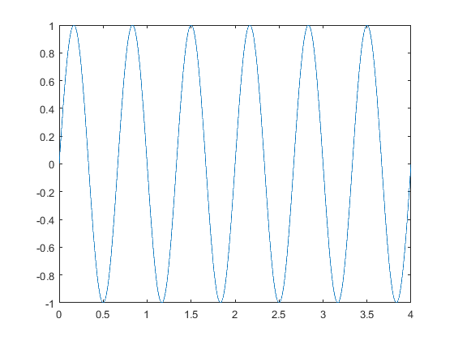

Contents
FRECUENCIA DIGITAL Y FRECUENCIA ANÁLOGA
Señal periódica acomodación del período.
%%1.-Dibujar la señal x(t)=sin(3*pi*t) alpha=1; t=0:0.001:4; omega=3*pi; s1=alpha*sin(omega*t); plot(t,s1); hold on
2.-Discretizar la señal con T=0.25
%N=8 nT=0:0.25:4; %señal discreta s2=alpha*sin(omega*nT); stem(nT,s2,'k', 'fill')
3.- Discretizar la señal con T=1/8=0.125
%N=16 nT=0:1/8:4; s3=alpha*sin(omega*nT); stem(nT,s3,'g', 'fill')
4.-Discretizar la señal con T=0.5
%N=4 nT=0:0.5:4; s4=alpha*sin(omega*nT); stem(nT,s4,'r', 'fill')
5.-Discretizar la señal con T=1/pi
%N=2*pi nT=0:1/pi:4; s5=alpha*sin(omega*nT); stem(nT,s5,'c', 'fill')
6.-Discretizar la señal con T=1/(2*pi)
%N=4*pi nT=0:1/(2*pi):4; s6=alpha*sin(omega*nT); stem(nT,s6,'m', 'fill')
CONCLUSIONES
%Se denominan señales periodicas de las que se pueden encontrar un patrón %repetitivo, es decir después de determinado tiempo vuelven a repetirse uno %a uno los valores anteriores, una y otra vez. Es el ciclo de la onda. % %La frecuencia de muestreo de la señal continua se representa por %donde el período P es racionalmente proporcional